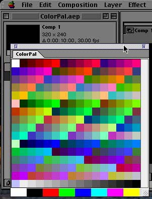

Color PalColor Pal
Color PalColor PalColor Pal is an Adobe® After Effects plug-in which provides a persistent, customizable floating color palette within After Effects. Color Pal allows you to easily store and access a large set of standard colors for use in your projects.
Color Pal can be used with any standard eyedropper in After Effects (e.g. composition background color, all color effect controls, solid color). Just choose the eyedropper, then click on the color of your choice in Color Pal.
Color Pal is distributed as a fully functional time-limited plug-in which you can download immediately and try out! You can purchase and register ColorPal directly from the plug-in itself using the eSellerate system.
Color Pal includes the following features:
| |
|  |
Color Pal requires Adobe® After Effects 5.0 or later. Both Macintosh and Windows versions are available.
Color Pal comes with documentation in HTML format. The documentation for the latest version also available online:
Color Pal is US$20.00 for both Windows and Macintosh versions. The downloads are a fully functional time-limited version and include facilities for registering the product using the eSellerate system.